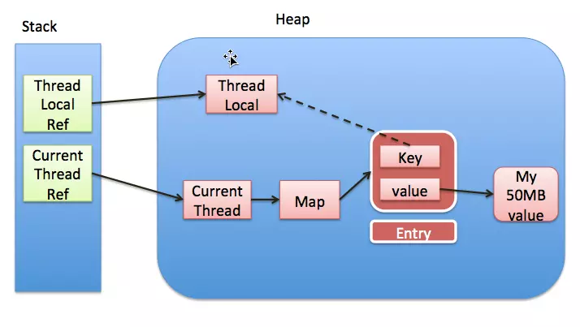

ThreadLocal
ThreadLocal为每一个使用该变量的线程都提供了独立的副本，可以做线程间的数据隔离，每一个线程都可以访问各自内部的副本变量。
ThreadLocal的简单使用
import java.util.stream.IntStream;
public class ThreadLocalExample {
public static void main(String[] args) {
//创建ThreadLocal实例
ThreadLocal<Integer> tlocal = new ThreadLocal<Integer>();
//创建5个线程，使用tlocal
IntStream.range(0, 5).forEach(i -> new Thread(() -> {
//每个线程之间都是独立的，设置tlocal互相受影响
tlocal.set(i);
System.out.println(Thread.currentThread() + "set i " + tlocal.get());
try {
Thread.sleep(1000);
} catch (InterruptedException e) {
e.printStackTrace();
}
System.out.println(Thread.currentThread() + "get i " + tlocal.get());
}).start()
);
}
}
上面的代码定义了一个全局唯一的ThreadLocal
Thread[Thread-0,5,main]set i 0
Thread[Thread-1,5,main]set i 1
Thread[Thread-3,5,main]set i 3
Thread[Thread-2,5,main]set i 2
Thread[Thread-4,5,main]set i 4
Thread[Thread-0,5,main]get i 0
Thread[Thread-1,5,main]get i 1
Thread[Thread-4,5,main]get i 4
Thread[Thread-2,5,main]get i 2
Thread[Thread-3,5,main]get i 3
ThreadLocal除了set和get方法，还有一个initialValue的方法。
initialValue()方法为ThreadLocal要保存的数据类型指定了一个初始化值，在ThreadLocal中默认返回值为null，实例代码如下：
protected T initialValue() {
return null;
}
我么可以重写initialValue方法来进行数据的初始化，即可以不通过set方法来给ThreadLocal赋值，如下面的代码：
ThreadLocal<Object> threadLocal = new ThreadLocal<Object>() {
@Override
protected Object initialValue() {
return new Object();
}
};
new Thread(() -> {
System.out.println(threadLocal.get());
}).start();
System.out.println(threadLocal.get());
数据输出如下，每一个想通过get方法获取到的值都是不一样的。
java.lang.Object@4f90c612
java.lang.Object@65ab7765
ThreadLocal源码分析
set(T t)方法
set方法主要是为ThreadLocal指定将要被存储的数据，如果重写了initialValue方法，在不钓鱼set方法的情况下，数据的初始值是initialValue方法计算结果。
//ThreadLocal的set方法
public void set(T value) {
Thread t = Thread.currentThread();
ThreadLocalMap map = getMap(t);
if (map != null)
map.set(this, value);
else
createMap(t, value);
}
//ThreadLocal的createMap方法
void createMap(Thread t, T firstValue) {
t.threadLocals = new ThreadLocalMap(this, firstValue);
}
//ThreadLocalMap的set方法源码
private void set(ThreadLocal<?> key, Object value) {
// We don't use a fast path as with get() because it is at
// least as common to use set() to create new entries as
// it is to replace existing ones, in which case, a fast
// path would fail more often than not.
Entry[] tab = table;
int len = tab.length;
int i = key.threadLocalHashCode & (len-1);
for (Entry e = tab[i];
e != null;
e = tab[i = nextIndex(i, len)]) {
ThreadLocal<?> k = e.get();
if (k == key) {
e.value = value;
return;
}
if (k == null) {
replaceStaleEntry(key, value, i);
return;
}
}
tab[i] = new Entry(key, value);
int sz = ++size;
if (!cleanSomeSlots(i, sz) && sz >= threshold)
rehash();
}
set方法的运行流程大致如下： 1. 使用Thread.currentThread()获取当前线程，根据当前线程获取与之关联的ThreadLocalMap的数据结构 2. 如果map为null，则创建一个ThreadLocalMap，用当前ThreadLocal实例作为key，将要存放的数据作为value，对象到ThreadLocal中则是创建了一个Entry 3. 如果map不为null，调用map的set方法，set方法中会遍历整个map的Entry，如果发现Entry的Key为null，则直接将其逐出兵器使用心得数据占用被逐出数据的位置，这个过程主要是为了防止内存泄漏 4. 接着创建心得Entry，使用ThreadLocal作为Key，将要存放的数据作为value 5. 最后再根据ThreadLocalMap的放弃数据元素的大小和阈值做比较，进行可以为null的数据项清理工作。
get(T t)方法
//ThreadLocal的get方法
public T get() {
Thread t = Thread.currentThread();
ThreadLocalMap map = getMap(t);
if (map != null) {
ThreadLocalMap.Entry e = map.getEntry(this);
if (e != null) {
@SuppressWarnings("unchecked")
T result = (T)e.value;
return result;
}
}
return setInitialValue();
}
private T setInitialValue() {
T value = initialValue();
Thread t = Thread.currentThread();
ThreadLocalMap map = getMap(t);
if (map != null)
map.set(this, value);
else
createMap(t, value);
return value;
}
get方法的工作流程如下： 1. 使用Thread.currentThread()获取当前线程，再通过当前线程获取与之关联的ThreadLocalMap，如果获取的到map，则以当前ThreadLocal作为key值获取对于的Entry，如果Entry不为null，则直接返回Entry的值。 2. 如果通过当前线程获取到的map为null，则需要调用setInitialValue方法，setInitialValue中首先调用initialValue获取初始值，再拿到这个初始值后跟上面的set方面的逻辑基本没啥区别了。
无论是get方法还是set方法，都不可避免地要与ThreadLocalMap和Entry打交道，ThreadLocalMap是一个完全类似于HashMap的数据结构，仅仅用于存放线程存放在ThreadLocal中的数据备份，ThreadLocalMap中的所有方法对外部都是不可见的。 在ThreadLocalMap中用于存储数据的是Entry，它是一个WeakReference类型的子类，之所以这样设计是为了能够在JVM发生垃圾回收事件时，能够自动回收防止发现内存泄漏。
ThreadLocal内存示意图
上面对于方法流程的分析还是显得有点抽象，我们来看下面这张图，我是从网上下载下来的，好多博客都在引用这张图，对于ThreadLocal运行时内存表现的很形象。 
- 每个thread中都存在一个map(ThreadLocalMap), map的类型是ThreadLocal.ThreadLocalMap。
- ThreadLocalMap中的key为一个threadlocal实例，value则是我们需要存储的值。
- ThreadLocalMap中是用弱引用包含的hreadlocal实例，当threadlocal实例置为null以后,没有任何强引用指向threadlocal实例,所以threadlocal将会被gc回收。
- 正常情况下，我们的value却不能回收,因为存在一条从current thread连接过来的强引用. 只有当前thread结束以后, current thread就不会存在栈中,强引用断开, Current Thread, Map, value将全部被GC回收。
之前看到网上有人问过这类问题，ThreadLocalMap.Entry使用弱引用，当堆内存吃紧时，会不会因为ThreadLocal被回收导致该线程获取不到对应的实例？
其实因为当前Thread会持有这个ThreadLocalMap，Java里的Thread类每一个都会一个ThreadLocalMap，这个是强引用，虽然ThreadLocalMap中的key是弱引用的ThreadLocal，当内存吃紧时，这个map仍然会有一个强引用指向它，所以gc并不会回收这部分内存，只有当当前Thread退出后，强引用断开，这部分才有可能会被GC回收。